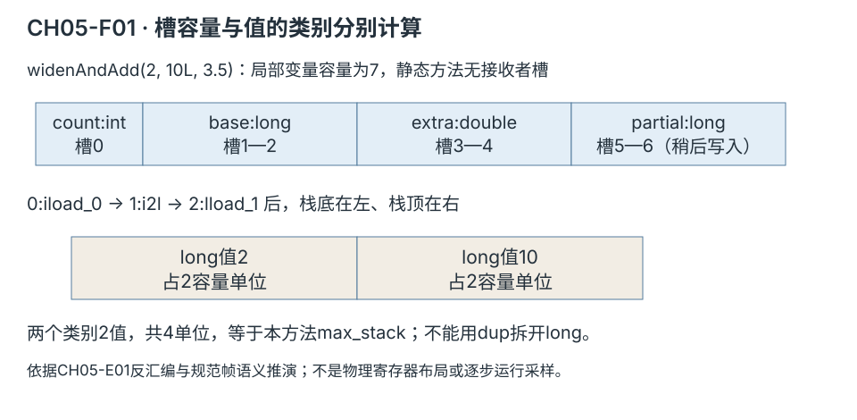

第二篇 · 第 5 章
字节码指令与验证机制
虚拟机怎样确认一段字节码能够按类型规则安全执行？把指令看成对局部变量与操作数栈类型状态的变换，而不是一串只会计算数值的符号。
本章基于 Java 平台标准版（Java Platform, Standard Edition，Java SE）25 规范，使用 Java 开发工具包（Java Development Kit，JDK）25.0.5.0.2。Java 虚拟机（Java Virtual Machine，JVM）的验证约束、HotSpot 实现与本次工具观察分别给出依据。第 4 章已介绍类文件与属性，本章继续解释其中代码和栈映射怎样协作。
数值能算出来，为什么还需要验证类型
CH05-E01 的 BytecodeCases 用两个分支计算一个整数，再将其乘二。编译器生成分支、局部存储与跳转，但验证器不能只看“两个分支都写了某个槽”。它还要知道写入的是什么类型、到目标位置时栈有多深，以及后续指令是否允许使用该状态。
// CH05-E01，branch 的实际源码
int result;
if (value >= 0) {
result = value + 1;
} else {
result = -value;
}
return result * 2;我们先按直线指令推演，再加入分支、异常和构造器。示例都是正常可编译的教学源码；不构造非法类文件，也不把一段输出当作业务正确性的证明。
5.1 操作数栈与局部变量
5.1.1 参数进入槽，指令改变栈
方法帧中的局部变量数组保存参数和中间值，操作数栈承载指令之间的数据传递。静态方法的第一个参数从槽 0 开始；普通实例方法还需要接收者。加载指令从槽取值压栈，存储指令从栈取值写槽，运算消费匹配类型的操作数并产生结果，返回指令再按返回类型消费结果。[S01]
widenAndAdd(int count, long base, double extra) 的描述符是 (IJD)J。本次反汇编给出 stack=4, locals=7：count 占槽 0，base 占 1—2，extra 占 3—4，long 临时值 partial 占 5—6。javap 显示的 args_size=3 不是类文件中另一个“参数槽容量”字段，不能拿它替代槽数计算。

| 偏移与指令 | 执行后的栈 | 容量单位 | 槽／返回变化 |
|---|---|---|---|
| 0 iload_0 | [I:2] | 1 | 读取 count |
| 1 i2l | [J:2] | 2 | 整数转换为 long |
| 2 lload_1 | [J:2, J:10] | 4 | 读取 base |
| 3 ladd | [J:12] | 2 | 消费两个 long |
| 4 lstore 5 | [] | 0 | 槽 5—6 保存 partial |
| 6 lload 5 | [J:12] | 2 | 取回 partial |
| 8 dload_3 | [J:12, D:3.5] | 4 | 读取 extra |
| 9 d2l | [J:12, J:3] | 4 | double 转 long |
| 10 ladd | [J:15] | 2 | 得到 long 结果 |
| 11 lreturn | [] | 0 | 返回 15 |
5.1.2 数值类别、槽复用与名称不是同一件事
long、double 属于双单位值，其他常用数值与引用是单单位值。栈操作指令也有类别约束，不能用适用于单单位值的 dup 任意拆开一个 long。byte、short、char、boolean 等源码类型在许多计算指令中使用 int 计算类型，数组的访问指令则仍有相应差异；不能只从 Java 类型名猜所有字节码形式。
本例 reuseSlot 的局部变量表把 first 放在槽 2 的偏移区间 [4,6)，second 也放在槽 2，但区间是 [10,12)。它们在源码中是不同变量，生存范围不重叠，所以同一槽可以被复用。变量名属于调试信息，验证器使用类型状态与有效位置，不会因为名字叫 result 就接受错误类型。槽号也不是某个固定处理器寄存器或对象地址。
5.2 运算、控制流与数组
5.2.1 分支出口必须符合目标位置的约束
在 branch 方法中，偏移 1 的 iflt 11 消费 int 条件；非负路径从 4 计算并写槽 1，负路径从 11 计算并写同一槽，两条路径最后都到 14。此时操作数栈为空，局部变量中有两个 int。本次栈映射在 11 使用 same 帧，在 14 追加一个 int，后者偏移由 11+2+1=14 得出。

类型兼容并不要求两个分支的实际数值相同。反过来，如果某条边不能满足目标帧对槽 1 的 int 要求，后续 iload_1 就没有合法依据。局部变量在某些汇合中可以变成不可用的 top 状态，因此也不能笼统说“不同类型只要汇合就一定立刻失败”；要看目标帧约束与之后怎样使用它。
本例数组循环的回边为 19: goto 4；在循环头保持数组引用与两个 int 局部状态，比较索引与长度后决定继续或退出。验证器关注控制流中的类型与结构关系，不以一次循环算出某个数字来代替所有边的约束检查。
5.2.2 数组检查与两种选择指令
sum(int[]) 使用 arraylength、iaload、iadd 和 iinc。合法字节码仍可能遇到空数组引用或越界索引；这些动态条件不能仅凭静态类型一概排除。后续编译器可以在证明成立时消去重复检查，仍须保持语言可观察语义，本章不由“有循环”猜测检查已经消除。
| 方法 | 键 | 指令 | 对应形式 |
|---|---|---|---|
| denseSwitch | 0、1、2、3 | 偏移 1 tableswitch | 连续范围和每项分支偏移 |
| sparseSwitch | −1000、1、10000 | 偏移 1 lookupswitch | 键与分支偏移配对 |
选择指令都消费一个 int，分支偏移与指令格式有各自规则，还可能包含对齐填充。这里的目标 32、37 等是方法代码偏移，不是常量池编号。某个源码 switch 采用哪种编码属于编译器选择，不能从本例推导所有版本都用同一启发式。[S02]
5.3 调用、异常与同步
5.3.1 描述符决定消费与返回类型
调用需要按方法描述符取得参数，并根据指令类别处理接收者与链接。实例调用通常还消费一个接收者引用；静态调用不需要该接收者。返回值的类型与宽度决定调用后栈状态，void 则不压回结果。链接与实际接收者选择进一步影响目标，第 7、14、15 章接续解释。
| 指令 | 本章对应 | 应保留的区别 |
|---|---|---|
| invokestatic | widenAndAdd、Math.max | 没有普通实例接收者 |
| invokevirtual | 调用实例方法及私有监视器对象的方法 | 指令形式、解析结果与是否允许覆盖分别判断 |
| invokeinterface | Unary.apply，接收者加一个 int | 本例操作数中的参数计数包含接收者 |
| invokespecial | Child 和 Base 的构造器调用 | 构造器、父类等特殊调用规则，不能归为普通虚分派 |
| invokedynamic | 本次输出字符串拼接 | 依引导与调用点链接，细节归第 15 章 |
“private 方法一定对应 invokespecial”不是可替代反汇编的通则：本次调用私有 MonitorCell.add 就由 javac 生成 invokevirtual。也不能据一条 invokevirtual 就断言调用一定具有多个运行时目标。
5.3.2 异常边改变入口栈，同步要覆盖退出路径
异常表把受保护区间关联到处理器。匹配异常转移时，处理器从异常引用的栈状态开始，不能沿正常路径留下的计算栈继续执行。CH04 的 parseOrDefault 已提供具名异常示例，本章再看 javac 为同步块生成的异常释放路径。
// CH05-E01，synchronizedBlock 的实际关键片段
6: monitorenter
... // 正常更新和读取
27: aload_2
28: monitorexit
29: ireturn
30: astore_3
31: aload_2
32: monitorexit
33: aload_3
34: athrow
Exception table:
from to target type
7 29 30 any
30 33 30 any槽 2 保存已经取得的监视器引用，槽 3 保存异常。正常返回先退出监视器；异常处理器也先退出再重新抛出。本例保护区从取得监视器之后开始，不会因为进入失败就凭空去退出一个未取得的监视器。第二条异常表项属于本次编译器生成的释放结构，不把它误认成源码里手写的第二个 catch。
同一个私有稳定监视器对象还提供同步方法 add，其标志为 ACC_PRIVATE, ACC_SYNCHRONIZED，方法体中没有显式 monitorenter／monitorexit。同步方法的获取和退出由相应调用执行机制承担；实例同步方法锁接收者，静态同步方法使用相应类镜像。块同步和方法同步分别表达，不靠搜索一条指令判断所有同步行为。
本轮只运行正常输入，异常释放依据规范与实际生成结构说明，没有为了“看见异常”追加失败输入。验证通过也不保证程序不会抛异常，更不保证全部并发业务规则正确。
5.4 验证器的工作过程
5.4.1 先识别约束，再定位责任
格式检查关心字节流、表项、索引与属性是否符合格式；静态约束关注指令及操作数等规则；结构与类型约束关心控制流、栈深度、指令边界及值类型能否合法传递。它们是解释问题的坐标，不要求所有实现把检查放在同一个函数或同一个瞬间。[S03 §4.8—4.10]
HotSpot 的 ClassVerifier::verify_class 遍历需要验证的方法，verify_method 从签名建立初始局部类型与空操作数栈，解析指令边界、异常表和栈映射，再沿指令更新当前帧。native、abstract 等方法有不同处理；不能因为某个方法没有 Code 就要求对其不存在的字节码做相同传播。[S05]
格式解析、类型验证、符号解析、访问检查与动态执行失败可能在相关阶段交织；第 7 章再定位具体链接错误。本章没有制造错误类文件来概括所有异常类型，也没有通过关闭验证绕过约束。
5.4.2 类型传播模型与实际扫描策略
用控制流图推演“入栈、出栈、局部赋值、分支出口、异常入口”能理解验证约束。但现代栈映射让实现可以按照提供的目标帧检查路径，不必把教学图上的所有状态都当成运行时反复求解的工作列表。
本次读取的 verify_method 线性扫描代码，使用 StackMapTable 匹配跳转和异常目标。match_stackmap 区分是否检查可赋值关系、是否用目标帧更新当前状态；无条件跳转后的扫描与仍存在直接前驱的扫描处理不同。图中的“汇合”描述必须满足的关系，不等于宣称实现采用某种未核对的算法。
栈映射是编译产物提供的类型信息，验证器仍需检查其与代码关系，不能把它当成可信声明无条件接受。合法类型状态也只约束一部分安全性质：整数溢出、无终止循环、错误业务公式或权限设计问题，不能由一次字节码验证自动排除。
5.5 未初始化对象与构造器
5.5.1 new 的引用还不能按普通对象任意使用
验证类型 uninitialized(Offset) 把未初始化引用关联到产生它的 new 指令位置；dup 得到的别名仍指向同一验证身份。构造器方法内，当前对象还使用特殊的 uninitializedThis 状态。合法构造器调用正常完成后，对应别名的类型才按规则转换；异常边不能把构造失败的对象当成可重新初始化或正常返回的完整对象。[S03 §4.10.1.2、§4.10.1.9]

未初始化验证类型不是“对象内存还未申请”的同义词，也不应直接等同于字段仍全为零。内部当前对象在父构造器返回后可按普通类型使用，不表示整个最外层构造器已经结束或对象已满足全部业务不变量；安全发布还需要其他语义条件。
5.5.2 灵活构造器体仍有早期构造约束
CH05-E02 的 FlexibleConstruction 在 Java 25 普通配置下编译，无预览选项。Child 构造器先用参数进行静态计算，再为当前类自己声明且没有声明初始化器的字段赋值，之后调用父构造器：
private Child(int value) {
int normalized = Math.max(value, 0);
this.original = value;
super(normalized);
}实际字节码中 8: putfield original:I 先于 13: invokespecial Base.<init>。这不表示可以提前读取任意实例成员、调用当前实例方法或把 this 交给外部。语言规范的早期构造上下文限制和虚拟机的未初始化类型规则各有责任。
JDK 增强提案（JDK Enhancement Proposal，JEP）513 将灵活构造器体交付到 JDK 25。它明确说明该语言变更不要求改变虚拟机规范；虚拟机早已允许符合约束的构造前代码。锁定 HotSpot 的 putfield 检查也专门允许未初始化 this 对当前类自己声明字段的受限赋值，而 verify_invoke_init 负责检查合法构造目标并更新初始化状态。不能把语言层放宽写成“Java 25 新增一条构造器字节码”或“验证器从此允许任意使用 this”。[S04、S05]
实际编译、运行与解释边界
本轮两份源文件编译成功，两个普通进程均退出 0。方法组输出 widen=15、reuse=8、branch=8、sum=12、dense=30、sparse=30、block=2、method=5、interface=8；构造器示例输出 original=7、normalized=7。verification 日志明确记录本章类及方法的验证，包括 Child 构造器。
这些观察证实当前源码在此环境可编译并完成这组正常调用；栈表和控制流仍是依据规范与编译产物的推演，不冒充逐步动态取值。没有测试框架、断言、非法类文件或压力运行。完整命令和输入身份见 运行说明与本次记录。
回顾与思考
指令既处理值，也要求特定类型状态；分支与异常边把这些要求连接成完整方法。描述符、槽容量、栈映射和构造器状态不是重复信息，而是让行为可以安全解释的不同约束。
- 为什么三个参数会占五个局部槽，而本例最大局部容量是七？
- 槽 2 曾保存 first，为什么后续仍能保存 second？
- 为什么类型不同的局部变量汇合不能简单概括为“一律马上报错”？
- 同步方法没有 monitorenter，监视器语义为什么仍存在？
- 为什么调用者 new@13 与 Child 内 Base 调用@13 不属于同一个偏移坐标？
- Java 25 允许前置字段赋值，为什么仍不能任意使用构造中的 this？
第 6 章把类型和符号放回加载器命名空间，第 7 章继续追踪连接、解析与初始化的时机和失败，第 8 章进入运行时类型结构。
来源与材料
- S01：Java SE 25 虚拟机规范 §2.6，局部变量、操作数栈与帧。
- S02：指令集第 6 章，加载／存储、转换、调用、选择、数组、同步与返回指令。
- S03：类文件规范 §4.8—4.10，验证类型、帧与构造器规则。
- S04：语言规范构造器章节与JEP 513。提案网页工具首次返回 403，后用只读 curl 取得官方正文并核对语言／虚拟机边界。
- S05：锁定提交的 verifier.cpp、stackMapTable.cpp、bytecodes.hpp；精确函数、分支与图对应见来源索引。